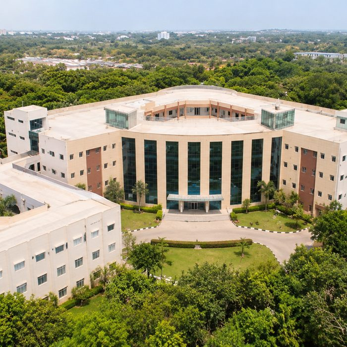
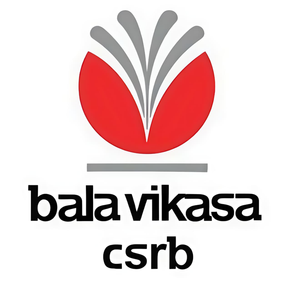
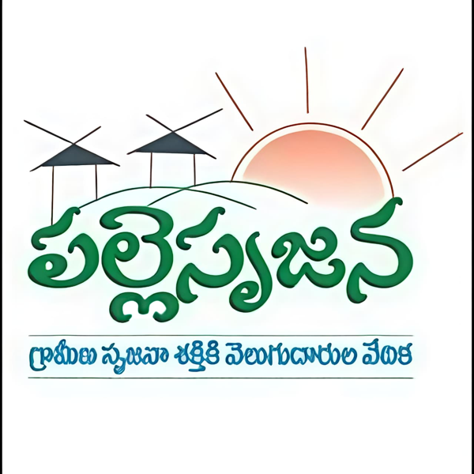
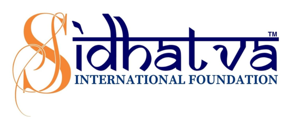

Centre for Innovation& SocialTransformation
Students at KG Reddy College sit down with villagers, learn what is hard in their daily work, and build technology to fix it.

KG Reddy CollegeWhere classrooms meet villages
CIST helps students contribute to the social, economic and environmental growth of communities. They work with local people, identify the most pressing challenges, then design and build technology-based solutions that improve daily life.
Through capacity building and community-based learning, CIST brings the principles of sustainable development and the UN Sustainable Development Goals into the curriculum. Students are expected to become community leaders with a strong sense of civic responsibility.
Vision
- A recognised centre of excellence that fosters an active ecosystem.
- Community engagement, continuous innovation and collaborative research.
- Initiatives that drive sustainable socio-economic development.
Mission
- Inspire faculty and students to become innovators and change makers for sustainable living.
- Build reciprocal partnerships with rural communities to solve real-time problems.
- Offer service-learning with non-profits, aimed at the UN Sustainable Development Goals.
- Run community-based participatory research with local communities.
Follow the questions
into the field
Every project starts with a visit, a notebook and a villager who knows the problem better than we do.
View village dataOur innovations: projects deployed in villages
Twelve technologies designed by CIST students and faculty, now working in villages. Select a project to see where it was deployed and who monitors it.
Our village network
15 villages 4 districts
CIST has partnered with 15 villages across 4 districts to enrich students in a socially responsible way and apply academic knowledge to social causes.
Our impact so far
Students, faculty and villagers working side by side: rural development, technology built for real needs, and a network that keeps growing.
Communities where students learn and build with villagers.
Moinabad, Kamareddy, Suryapet and Vikarabad.
Technologies now at work in villages.
One connected network for social transformation.
Recognition
Four honours for taking classroom work into communities.
TSIC Innovator Award
Telangana State Innovation Cell, Hyderabad. CIST faculty team.
Community Outreach Through Projects Award
IUCEE, ICTIEE 2023 Conference, Mysore.
Quanser Global Sustainability Award
Global Engineering Deans Council, Sydney.
IRSPBL Conference Panel Recognition
University of Pretoria, South Africa.
Sustainable Development Goals
The United Nations set 17 goals for a fairer, healthier planet by 2030. Select a tile to read the goal. Select another and the first one turns back.
Goal names and icons belong to the United Nations (un.org/sustainabledevelopment). The content of this website has not been approved by the United Nations and does not reflect the views of the United Nations or its officials or Member States.
Courses offered
A four-year journey from design thinking to launching a venture. Select a year.
Gallery
Twelve moments from village visits. Hover to spread the fan, click to open.
Partners

BVIC-CSRB
MoU to collaborate on R&D in sustainable energy solutions.

Palle Srujana
MoU for community engagement programmes and Gnanshodh activities.

Siddhatva Foundation
MoU for community engagement and STEM-based learning.
Work with CIST
Beside Moinabad PS, Chilkur (V),Moinabad (M), Hyderabad, Telangana
KG Reddy College of Engineering & Technology, an autonomous institution
Have a village problem that technology could ease? Tell us where it is and who it affects. Students and faculty start with a visit, not a pitch.